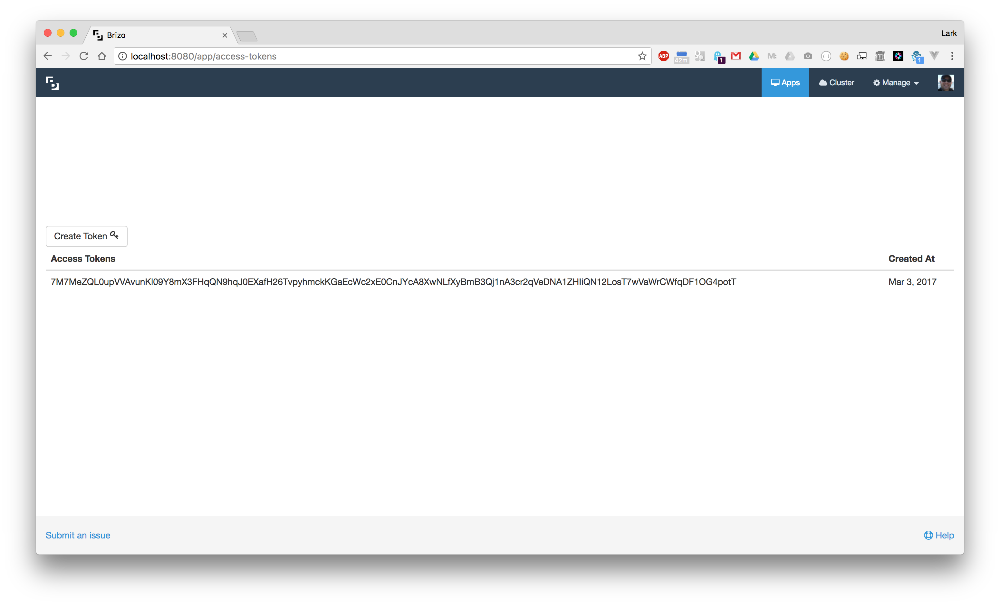

<div class="help-index">
  <div class="container-fluid">
    <div class="row">
      <div class="col-md-6 col-md-offset-3">
        <a [routerLink]="['/help']">&laquo; Back to Help</a>
        <h3>Access Tokens</h3>
        <hr />
        <p>Access tokens allow users to interact with the Brizo API. To create a new Access Token just click "Create Token".</p>
        
      </div>
    </div>
  </div>
</div>